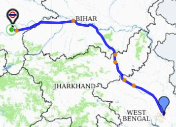

Route Map
This train 22588 Banaras - Sealdah Amrit Bharat Express passes through states of Uttar Pradesh, Jharkhand & West Bengal.

Passenger Travel, Catering & Booking Guide
On-Board Amenities & Push-Pull Technology
Built on modern LHB push-pull architecture with dual locomotives at either end, the 22588 Amrit Bharat Express delivers faster acceleration at intermediate stops and jerk-free ride comfort via semi-permanent couplers. All coaches are fully non-air-conditioned and feature upgraded cushioned berths, individual mobile charging sockets per bay, bottle holders, foldable snack tables, sensor-based bio-toilets, and CCTV surveillance in common doorways.
Meals, Water & Strategic Station Halts
Like first-generation Amrit Bharat Express rakes, this train operates without a dedicated pantry car. Passengers can purchase hot meals, snacks, and packaged drinking water from licensed platform vendors during scheduled halts or pre-order berth-side delivery through the IRCTC e-Catering mobile app at major junctions. Key extended halts (5 minutes or longer) along the route include: Dd Upadhyaya Jn (DDU) [23:10–23:15, 5 min halt], Patna Jn (PNBE) [01:58–02:05, 7 min halt]—making these the most convenient stations for refilling water bottles and picking up fresh refreshments.
Seating Capacity, Booking Rules & Live Running Status
A standard 22-coach Amrit Bharat rake provides 640 reserved berths across 8 Sleeper Class coaches (S1–S8) and roughly 1,100 unreserved seats across 11 General Seating coaches (GN), plus 2 SLRD coaches with wheelchair-accessible compartments for Divyangjan passengers. Reserved Sleeper bookings open 60 days in advance on the IRCTC portal, with the Tatkal quota opening at 11:00 AM IST on the day prior to departure. Unreserved tickets for General coaches can be purchased at station counters or via the UTS On Mobile app within the permitted station geofence.
Before departing for the station, verify live train running status and platform numbers on the official National Train Enquiry System (NTES), and check seat availability or book reserved tickets via IRCTC Next Generation eTicketing.